Single-Cell Open Problems
Open Problems in Single-Cell Analysis Jamboree 2021
Last built: 2021-03-29 17:17:39
| Parameter | Value |
|---|---|
| hashtag | #SingleCellOpenProblems |
| start_day | 2021-03-29 |
| end_day | 2021-03-31 |
| timezone | America/Los_Angeles |
| theme | theme_light |
| accent | #ff4a55 |
| accent2 | #cccccc |
| kcore | 2 |
| topics_k | 6 |
| bigram_filter | 3 |
| fixed | FALSE |
| seed | 1 |
Introduction
An analysis of tweets for the query #SingleCellOpenProblems related to the Open Problems in Single-Cell Analysis Jamboree 2021 from 2021-03-29 to 2021-03-31. A total of 17 tweets from 13 users were collected using the {rtweet} R package.
1 Timeline
1.1 Tweets by day
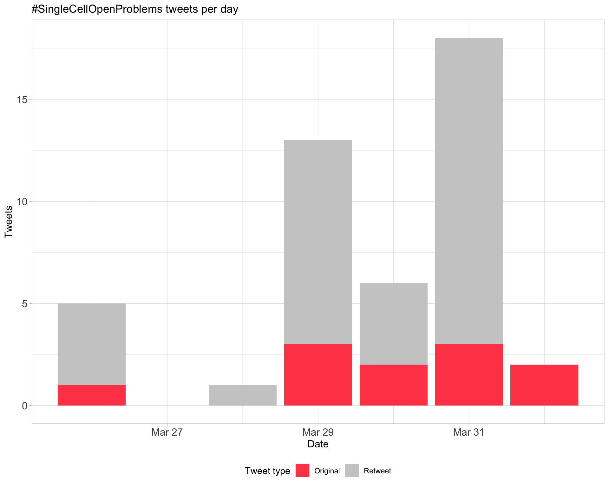
1.2 Tweets by day and time
Filtered for dates 2021-03-29 - 2021-03-31 in the America/Los_Angeles timezone.
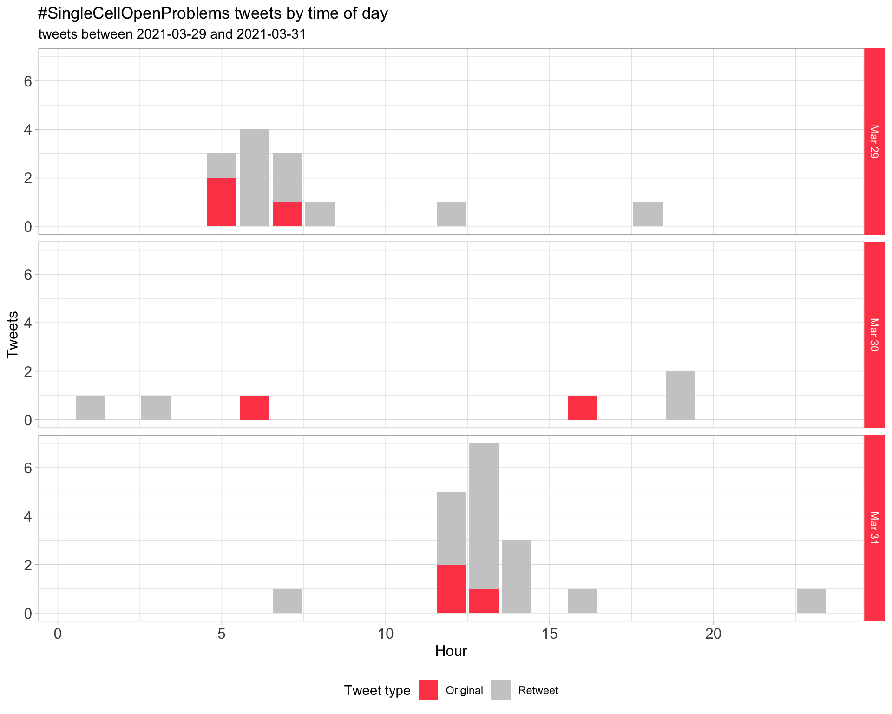
2 Users
2.1 Top tweeters
Overall
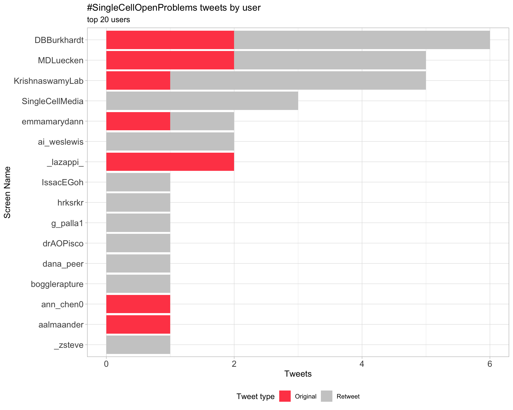
Original
Retweets
2.2 Retweet proportion
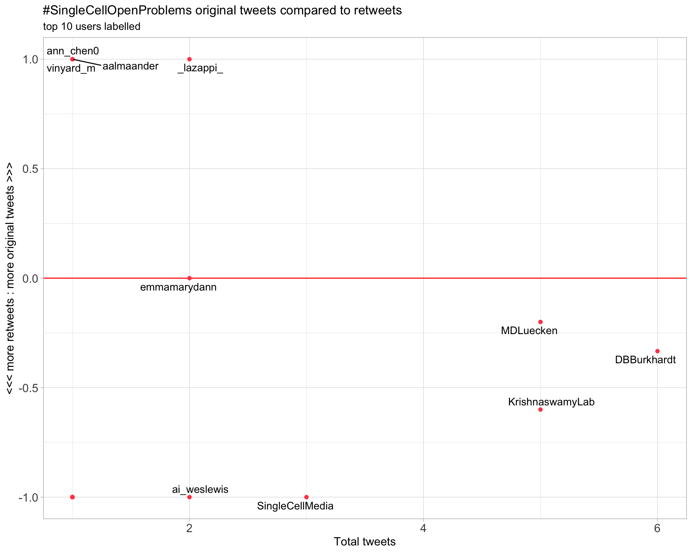
2.3 Top tweeters timeline
2.4 Top tweeters by day
Overall
Day 1
Day 2
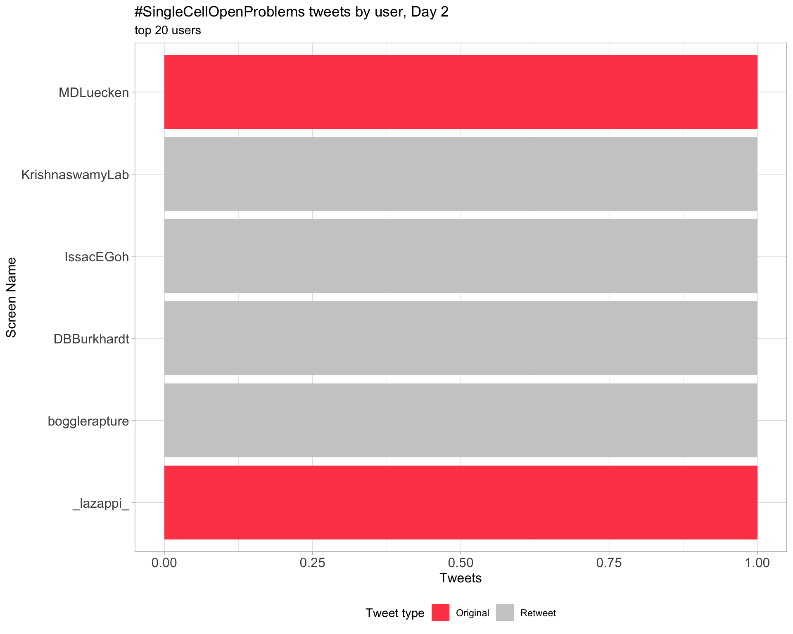
Day 3
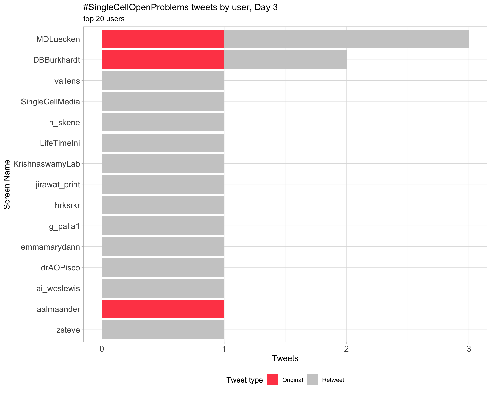
Original
Day 1
Day 2
Day 3

Retweets
Day 1
Day 2
Day 3
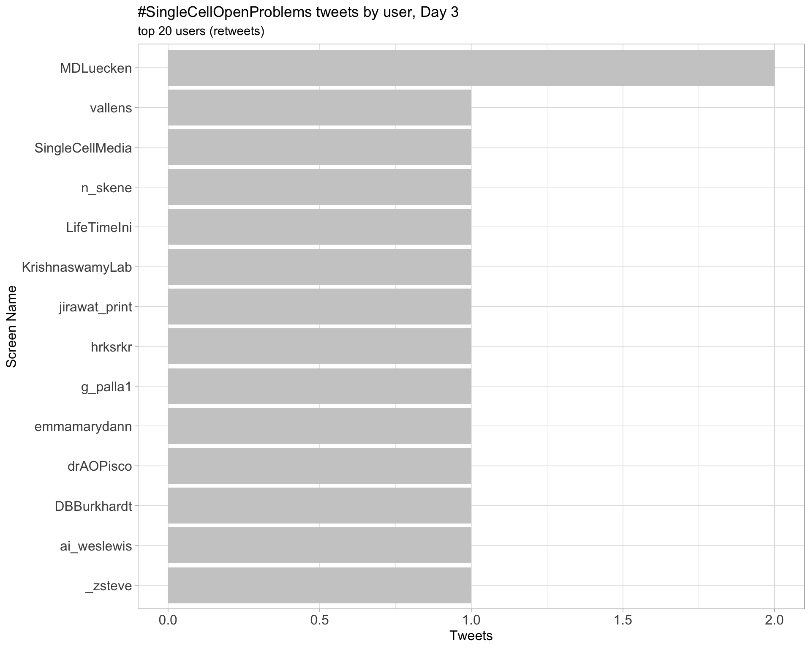
3 Sources
Users
Tweets
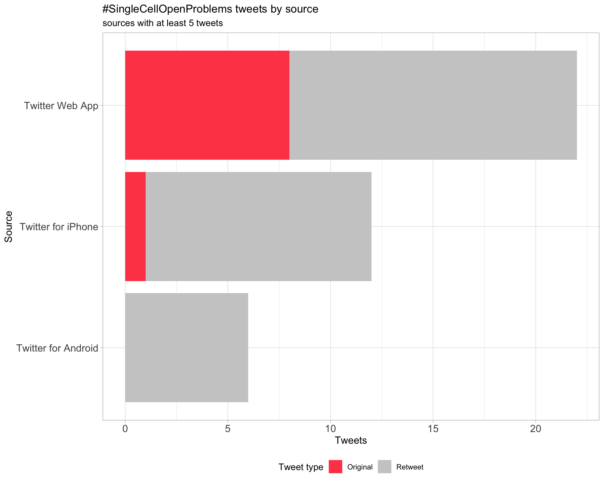
4 Networks
4.1 Replies
The “replies network”, composed from users who reply directly to one another, coloured by PageRank.
4.2 Mentions
The “mentions network”, where users mention other users in their tweets. Filtered for a k-core of 2. Node colour and size adjusted according to PageRank score.
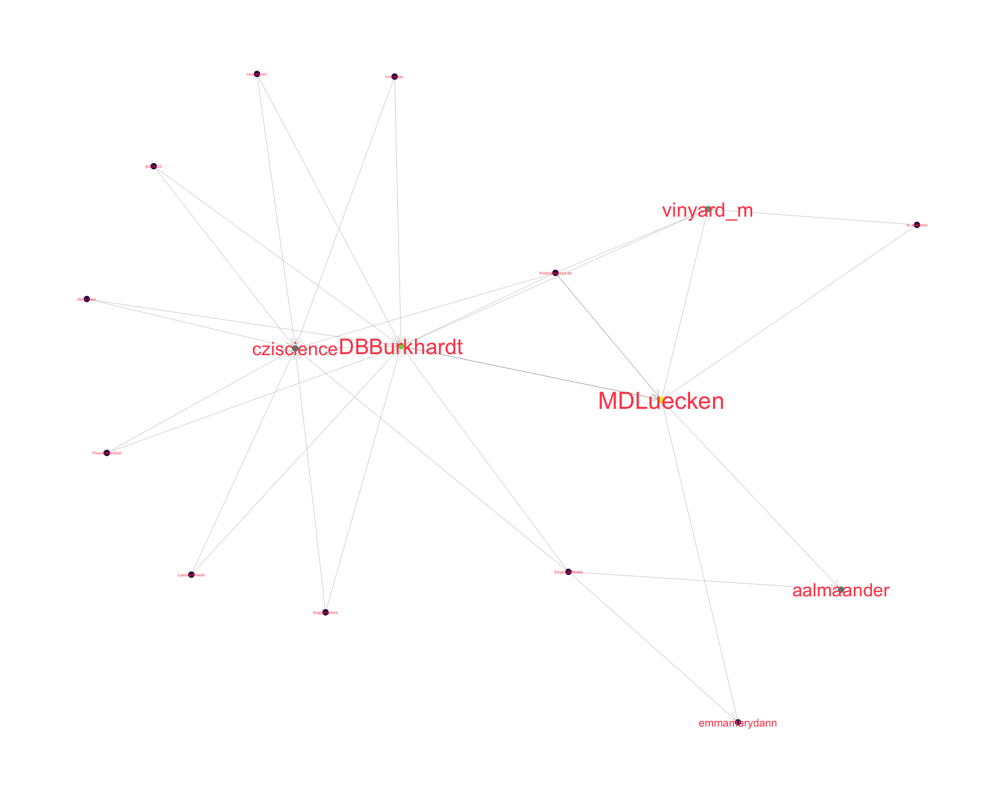
5 Tweet types
5.1 Retweets
Proportion
Count
Top 10
| screen_name | text | retweet_count |
|---|---|---|
| DBBurkhardt | Excited to kick off the first day of the Open Problems in Single-Cell Analysis Jamboree today! Thanks @cziscience for sponsoring the event and sending out these excellent gift boxes! Check out #SingleCellOpenProblems at https://t.co/vS5nsJaX1R https://t.co/hffXFZhqUy | 7 |
| vinyard_m | Super excited for the #SingleCellOpenProblems Jamboree starting Monday. Follow progress at https://t.co/HEi8Lo4OMO and https://t.co/TMjEw6RBEB https://t.co/TO7gHMGgSv | 5 |
| emmamarydann | The #SingleCellOpenProblems Jamboree is about to kick off üéâüë©‚Äçüíª Excited to join single-cell hackers across the globe for this collective benchmarking tour-de-force. Follow progress at https://t.co/PNlAiZZTl2 | 1 |
| ann_chen0 |
Really excited to be a part of this Jamboree! Thanks to all the organizers who put this together. #SingleCellOpenProblems https://t.co/sIBrsOrlKD |
1 |
Most retweeted
5.2 Likes
Proportion
Count
Top 10
| screen_name | text | favorite_count |
|---|---|---|
| DBBurkhardt | Excited to kick off the first day of the Open Problems in Single-Cell Analysis Jamboree today! Thanks @cziscience for sponsoring the event and sending out these excellent gift boxes! Check out #SingleCellOpenProblems at https://t.co/vS5nsJaX1R https://t.co/hffXFZhqUy | 20 |
| vinyard_m | Super excited for the #SingleCellOpenProblems Jamboree starting Monday. Follow progress at https://t.co/HEi8Lo4OMO and https://t.co/TMjEw6RBEB https://t.co/TO7gHMGgSv | 14 |
| emmamarydann | The #SingleCellOpenProblems Jamboree is about to kick off üéâüë©‚Äçüíª Excited to join single-cell hackers across the globe for this collective benchmarking tour-de-force. Follow progress at https://t.co/PNlAiZZTl2 | 3 |
| ann_chen0 |
Really excited to be a part of this Jamboree! Thanks to all the organizers who put this together. #SingleCellOpenProblems https://t.co/sIBrsOrlKD |
1 |
Most likes
5.3 Quotes
Proportion
Count
Top 10
| screen_name | text | quote_count |
|---|---|---|
| ann_chen0 |
Really excited to be a part of this Jamboree! Thanks to all the organizers who put this together. #SingleCellOpenProblems https://t.co/sIBrsOrlKD |
1 |
Most quoted
6 Media
Proportion
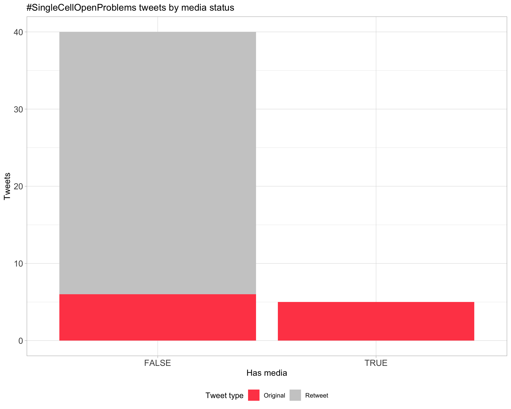
Top 10
| screen_name | text | favorite_count |
|---|---|---|
| DBBurkhardt | Excited to kick off the first day of the Open Problems in Single-Cell Analysis Jamboree today! Thanks @cziscience for sponsoring the event and sending out these excellent gift boxes! Check out #SingleCellOpenProblems at https://t.co/vS5nsJaX1R https://t.co/hffXFZhqUy | 20 |
| vinyard_m | Super excited for the #SingleCellOpenProblems Jamboree starting Monday. Follow progress at https://t.co/HEi8Lo4OMO and https://t.co/TMjEw6RBEB https://t.co/TO7gHMGgSv | 14 |
6.1 Most liked image

7 Tweet text
7.1 Word cloud
The top 100 words used 3 or more times.
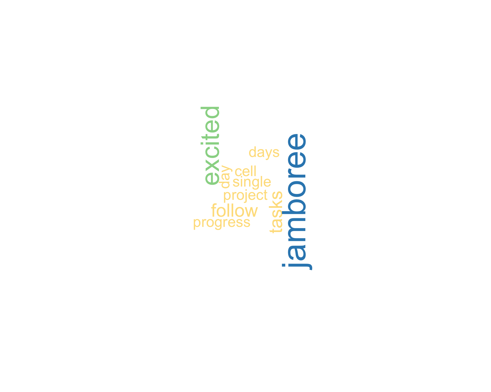
7.3 Emojis
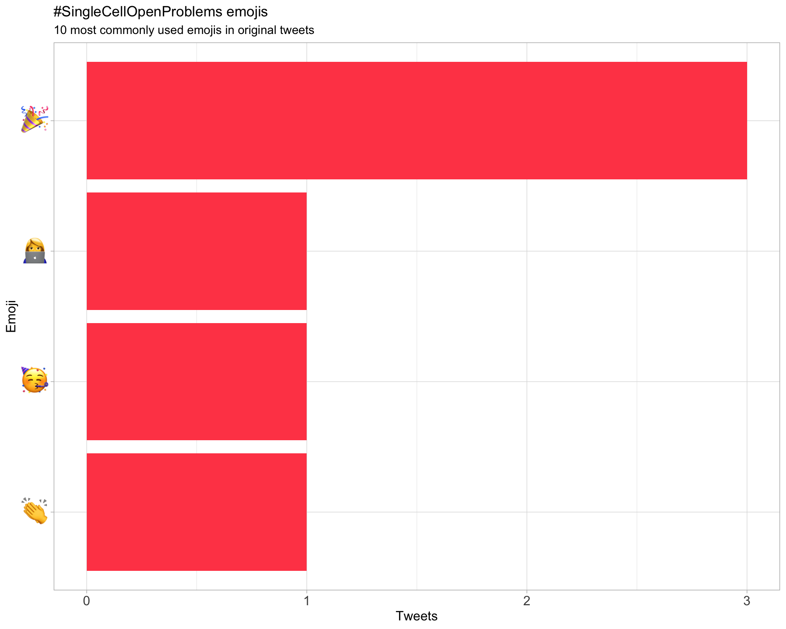
7.4 Bigram graph
Words that were tweeted next to each other at least 3 times.
7.5 Topic modelling
Top 10 words associated with 6 topics identified by LDA.
7.5.1 Representative tweets
Most representative tweets for each topic
Topic 1
| screen_name | text | gamma |
|---|---|---|
| vinyard_m | Super excited for the #SingleCellOpenProblems Jamboree starting Monday. Follow progress at https://t.co/HEi8Lo4OMO and https://t.co/TMjEw6RBEB https://t.co/TO7gHMGgSv | 0.995624 |
Topic 2
| screen_name | text | gamma |
|---|---|---|
| DBBurkhardt | Excited to kick off the first day of the Open Problems in Single-Cell Analysis Jamboree today! Thanks @cziscience for sponsoring the event and sending out these excellent gift boxes! Check out #SingleCellOpenProblems at https://t.co/vS5nsJaX1R https://t.co/hffXFZhqUy | 0.9974203 |
Topic 3
| screen_name | text | gamma |
|---|---|---|
| emmamarydann | The #SingleCellOpenProblems Jamboree is about to kick off üéâüë©‚Äçüíª Excited to join single-cell hackers across the globe for this collective benchmarking tour-de-force. Follow progress at https://t.co/PNlAiZZTl2 | 0.9972596 |
Topic 4
| screen_name | text | gamma |
|---|---|---|
| ann_chen0 |
Really excited to be a part of this Jamboree! Thanks to all the organizers who put this together. #SingleCellOpenProblems https://t.co/sIBrsOrlKD |
0.9891455 |
8 Links
Links to GitHub, GitLab, BitBucket, Bioconductor or CRAN mentioned in Tweets.
| Name | Tweets | Retweets | Type | Link |
|---|---|---|---|---|
| SingleCellOpenProblems | 1 | 0 | GitHub | singlecellopenproblems/singlecellopenproblems |
Session info
## R version 4.0.0 (2020-04-24)
## Platform: x86_64-apple-darwin17.0 (64-bit)
## Running under: macOS Catalina 10.15.7
##
## Matrix products: default
## BLAS: /Library/Frameworks/R.framework/Versions/4.0/Resources/lib/libRblas.dylib
## LAPACK: /Library/Frameworks/R.framework/Versions/4.0/Resources/lib/libRlapack.dylib
##
## locale:
## [1] en_US.UTF-8/en_US.UTF-8/en_US.UTF-8/C/en_US.UTF-8/en_US.UTF-8
##
## attached base packages:
## [1] stats graphics grDevices utils datasets methods base
##
## other attached packages:
## [1] fs_1.5.0 here_1.0.1 kableExtra_1.3.2 knitr_1.31
## [5] magick_2.6.0 webshot_0.5.2 viridis_0.5.1 viridisLite_0.3.0
## [9] wordcloud_2.6 RColorBrewer_1.1-2 ggtext_0.1.1 ggraph_2.0.4
## [13] ggrepel_0.9.1 ggplot2_3.3.3 emo_0.0.0.9000 rvest_0.3.6
## [17] xml2_1.3.2 topicmodels_0.2-12 tidytext_0.3.0 igraph_1.2.6
## [21] stringr_1.4.0 purrr_0.3.4 forcats_0.5.1 lubridate_1.7.9.2
## [25] tidyr_1.1.3 dplyr_1.0.5 rtweet_0.7.0 clamour_0.1.0
##
## loaded via a namespace (and not attached):
## [1] bitops_1.0-6 usethis_2.0.1 progress_1.2.2 httr_1.4.2
## [5] rprojroot_2.0.2 SnowballC_0.7.0 tools_4.0.0 bslib_0.2.4
## [9] utf8_1.2.1 R6_2.5.0 DBI_1.1.1 colorspace_2.0-0
## [13] withr_2.4.1 processx_3.4.5 tidyselect_1.1.0 gridExtra_2.3
## [17] prettyunits_1.1.1 curl_4.3 compiler_4.0.0 cli_2.3.1
## [21] NLP_0.2-1 labeling_0.4.2 slam_0.1-48 sass_0.3.1
## [25] scales_1.1.1 tm_0.7-8 callr_3.5.1 askpass_1.1
## [29] digest_0.6.27 rmarkdown_2.7 pkgconfig_2.0.3 htmltools_0.5.1.1
## [33] highr_0.8 rlang_0.4.10 rstudioapi_0.13 jquerylib_0.1.3
## [37] farver_2.1.0 generics_0.1.0 jsonlite_1.7.2 tokenizers_0.2.1
## [41] RCurl_1.98-1.2 magrittr_2.0.1 modeltools_0.2-23 Matrix_1.3-2
## [45] Rcpp_1.0.6 munsell_0.5.0 fansi_0.4.2 lifecycle_1.0.0
## [49] stringi_1.5.3 yaml_2.2.1 debugme_1.1.0 MASS_7.3-53.1
## [53] plyr_1.8.6 grid_4.0.0 parallel_4.0.0 crayon_1.4.1
## [57] lattice_0.20-41 graphlayouts_0.7.1 gridtext_0.1.4 hms_1.0.0
## [61] ps_1.5.0 pillar_1.5.1 markdown_1.1 reshape2_1.4.4
## [65] stats4_4.0.0 glue_1.4.2 evaluate_0.14 selectr_0.4-2
## [69] png_0.1-7 vctrs_0.3.6 tweenr_1.0.1 gtable_0.3.0
## [73] openssl_1.4.3 polyclip_1.10-0 assertthat_0.2.1 xfun_0.21
## [77] ggforce_0.3.2 tidygraph_1.2.0 janeaustenr_0.1.5 tibble_3.1.0
## [81] ellipsis_0.3.1